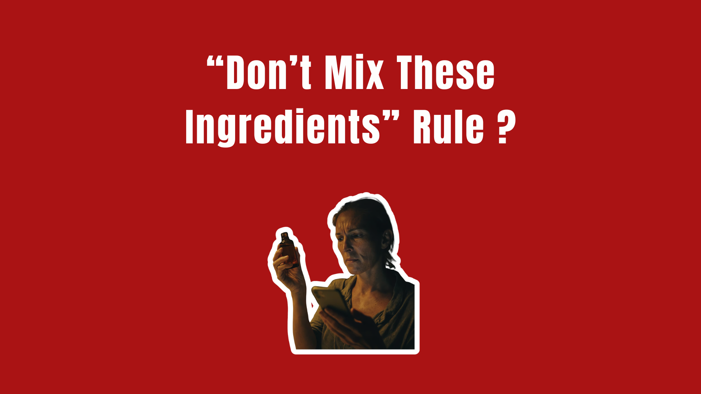
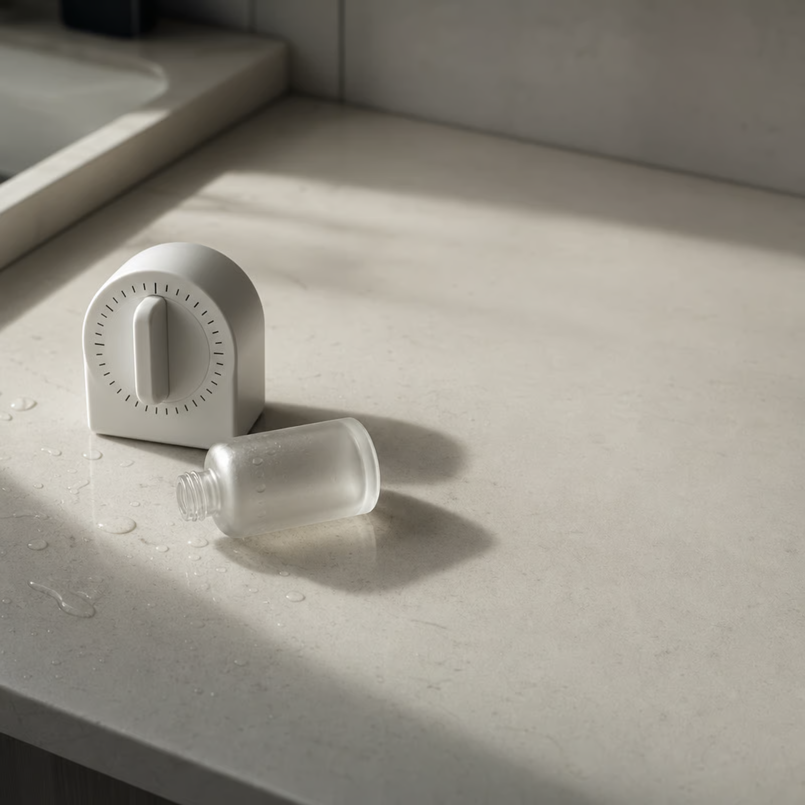

You’ve done this. Standing in your bathroom at 11pm, one bottle in each hand, typing “can you use niacinamide with vitamin C” into your phone with your thumb.
You got 40 million results. Half said absolutely not. Half said it’s fine. Three of them were written by brands that sell both. You put one bottle down, felt vaguely guilty, and went to bed.
That moment — that specific little spike of anxiety in your own bathroom — is a product. Someone built it. And it works so well you’ve stopped noticing it’s there.
The Lab Error That Became a Rule
Here’s the actual origin of the most famous “conflict” in skincare.
In the 1960s, researchers combined vitamin C and niacinamide in a lab. The combination produced nicotinic acid — a compound that causes flushing. Redness. The conclusion got shorthand-ed into these two cancel each other out and turn your face red, and it has been repeated approximately nine million times since.
Two details got lost on the way.
One: they weren’t using niacinamide. They were using pure niacin — a different compound. The thing in your serum is not the thing in that beaker.
Two: they were cooking it. The reaction requires high heat. A 2014 commentary looked at this directly and found the pathway is thermodynamically unfavourable at skin-surface temperature — roughly 32°C. Your face is 32°C. It is not an 80-degree beaker in 1962.
And it hasn’t been relevant for a decade anyway, because almost every serum on the shelf now uses a stable derivative — 3-O-ethyl ascorbic acid, sodium ascorbyl phosphate, ascorbyl glucoside — that sits at a skin-friendly pH and doesn’t do this at all. A 2023 study in the Journal of Cosmetic Dermatology found people using both together got better brightness and texture than either alone.
So the rule is: outdated, based on a different ingredient, at a temperature your face has never been, disproven twice. It’s still on the back of the box.
Ask Who the Rule Is For
Here’s the question that reorganizes everything: if two ingredients conflict, what do you have to buy?
You have to buy a system.
That’s it. That’s the whole mechanism. A world where ingredients fight each other is a world where you cannot safely assemble a routine from four different brands. You need products designed to work together — which, conveniently, means products from one company, purchased as a set, replaced as a set.
Ingredient conflict isn’t safety information. It’s a moat. It makes your existing shelf a liability and their complete regimen the only responsible choice. Every “don’t mix” rule quietly converts a $40 purchase into a $200 one, and it does it while sounding like it’s looking out for you.
Notice how the warnings almost never come from the brand whose product you’d be adding. They come from the brand whose product you already own. That’s not a coincidence. That’s retention.
The Thirty-Minute Thing
The other great invention: waiting.
Somewhere along the way, “let your product absorb” became “wait 30 minutes between layers,” and a generation of people started setting timers in their own bathrooms.

Nobody knows where 30 came from. It isn’t in the dermatology literature. Ask an actual dermatologist and you’ll get some version of what Dr. Rachel Nazarian has said publicly — that the idea of waiting for products to “sink in” is a myth, and that you don’t need more than a few seconds before applying the next thing.
The honest number is 30 to 90 seconds, and even that is mostly about pilling — stopping your products from rolling up into little grey worms — not about efficacy. The AAD suggests letting a layer settle before the next one. Settle. Not marinate.
Thirty minutes is a routine you will quit. Which may be the point: a routine you quit is a routine you blame yourself for quitting, and shame is a repeat customer.
Two Rules That Are Actually Real
This is where most debunk pieces overreach, declare everything a lie, and become the thing they’re criticizing. So let’s be precise, because there are real ones, and they’re less exciting than the fake ones — which is exactly why they get less airtime.
- A retinoid plus a strong exfoliating acid, on the same night, is a genuine problem. Not because they cancel out. Because they’re both irritating and irritation is cumulative. Retinoid on Monday, glycolic on Tuesday, both on Wednesday, and by Friday your barrier is wrecked and you’re convinced you’re “sensitive.” You’re not sensitive. You did two aggressive things at once. Alternate nights. That’s the whole fix and it’s free.
- Benzoyl peroxide can degrade certain retinoids on contact. Real chemistry, not folklore. It’s also mostly solved — adapalene is stable with it, and using them at opposite ends of the day handles the rest.
Two rules. Both about irritation and timing, neither about mystical incompatibility. Notice that neither one requires you to buy anything. That’s why you’ve heard about them a tenth as often as the vitamin C thing.
How to Spot a Fake One
You don’t need a chemistry degree. You need one question: does the party issuing the warning sell the solution to it?
If the brand telling you these two ingredients are dangerous together also sells a “compatible system,” a “conflict-free routine,” or a bundle — you’re not reading safety information. You’re reading a sales page with a lab coat on.
The secondary tell: real conflicts have mechanisms you can name. Cumulative irritation. Oxidative degradation. Fake ones have vibes. “They cancel each other out.” “They fight.” “Your skin gets confused.”
Your skin does not get confused. Your skin has no idea what brand anything is.
What This Actually Costs You
Not money. Something worse.
It costs you the products that were working. You bought something, used it for nine days, read a “do not mix” listicle, got scared, and quietly retired it to the back of the cabinet — during the exact window when nothing visible happens yet with anything. You didn’t decide it failed. You never let it try.
It costs you the routine you never built, because assembling one felt like defusing a bomb, so you defaulted to whatever three-step set some brand told you was safe together.
And it costs you the belief that you can figure this out yourself. That’s the expensive one. A person who thinks skincare is a minefield needs a guide. Guides sell bundles.
The same machine runs in haircare, incidentally, and it runs harder — because nobody can see their own scalp, so nobody can check. Don’t use that with your scalp treatment. Don’t layer that over your serum. Same structure. Same beneficiary. Same silence about who’s actually asking.
The Bottom Line
Two real rules, both about not doing two harsh things at once. Everything else you’ve been carefully avoiding is, with a handful of edge cases, a lab error from 1962 that found a second career in marketing.
Use the things you paid for. Together. Tonight. And if a warning ever makes you feel like your bathroom is a chemistry hazard — check who’s selling the safety.
Sources: Healthline — Can You Safely Use Vitamin C and Niacinamide Together?; SOMA Skin Project — Niacinamide and Vitamin C Together: Here’s the Science; UpCircle — How to Layer Skincare Correctly; Journal of Cosmetic Dermatology (onlinelibrary.wiley.com).